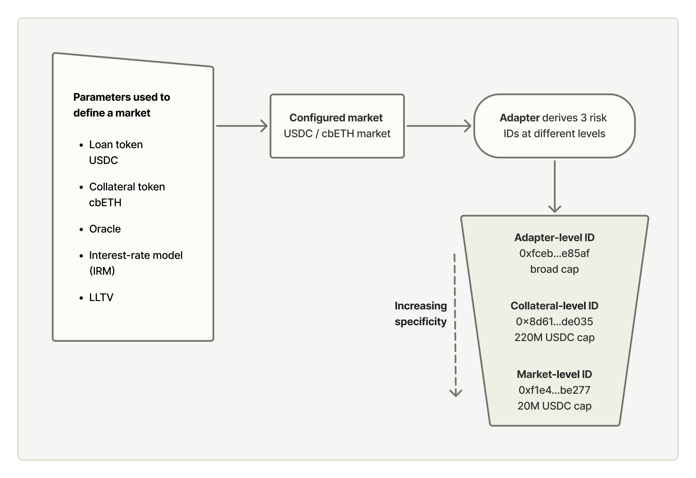

I wanted to understand how secured lending changes when it moves onchain:
- which functions are separated
- where authority sits
- how much discretion remains with human actors
- what participants still have to trust
Morpho offered a useful case study because its vault architecture makes those divisions explicit.
To make that structure concrete, I used the Steakhouse Prime USDC vault as a case study.
Rather than looking only at where the capital was allocated, I examined the roles around that allocation: who could make which decisions, how much discretion each role retained, and what constraints shaped that authority.
In a curated vault, authority is neither fully automated nor fully discretionary. It is structured.
Roles, Participants and Infrastructure
The vault sits within a broader structure of roles, participants and infrastructure, each carrying different responsibilities and dependencies.
| Layer | Components |
|---|---|
| Vault governance and management | Owner, Curator, Allocator, Sentinel |
| Capital participants | Depositors, Borrowers |
| Protocol and market infrastructure | Morpho protocol, oracles, liquidators |
Of these three layers, the governance roles hold the most direct authority over how the vault is configured and managed.
Owner
- Function: administers the vault’s governance structure
- Decision rights: appoints or replaces key privileged roles
- Discretion: decides who is entrusted with those powers
- Trust dependency: governance judgment and secure control of the Owner authority
- Main risk: compromised or irresponsible reassignment of privileged roles
The Owner is not the investment strategist or day-to-day risk manager. Its role sits one level above that: it shapes the authority structure around the vault. In practice, that means deciding who is trusted to act as Curator or Sentinel and maintaining secure control over the highest-level administrative permissions.
That distinction matters because this is not quite analogous to a conventional fund manager. In a protocol-based structure, some responsibilities that might otherwise sit inside one institution are separated into explicit roles with bounded permissions. The Owner’s responsibility is therefore less about making investment decisions directly and more about delegating authority responsibly.
Curator
- Function: defines the vault’s strategy and risk boundaries
- Decision rights: determines which exposures are permitted, configures risk limits, and appoints Allocators
- Discretion: decides how the vault’s risk appetite is translated into concrete constraints within the protocol’s available controls
- Trust dependency: quality of risk judgment, monitoring, and delegation
- Main risk: poor or compromised curation can materially change the vault’s risk profile
The Curator sits between the protocol’s fixed capabilities and the vault’s actual risk configuration. Morpho defines the actions and controls that are available; the Curator decides how those controls are used to express a particular risk view. Its role is therefore less about day-to-day capital movement and more about determining the boundaries within which that movement can occur.
Vault V2 separates this strategic risk-setting function from tactical allocation. The Curator appoints one or more Allocators, who can then move capital within the limits already established for the vault. This creates a clear distinction between deciding which risks are acceptable and deciding how capital is deployed among those accepted risks.
That separation also changes where trust sits. A depositor does not need to rely on the Curator to make every allocation decision, but does rely on the Curator to define sensible risk boundaries, monitor whether those assumptions remain valid, and delegate allocation authority appropriately.
The protocol makes the Curator’s permissions and resulting configuration visible onchain, but not necessarily the full reasoning behind those choices. That judgment may be shaped by an offchain investment mandate, risk framework, internal governance process, or client requirements. The technical question, then, is how those judgments are translated into enforceable vault configuration.
Allocator
- Function: manages the deployment of capital within the vault’s established risk limits
- Decision rights: allocates and reallocates capital among permitted positions
- Discretion: determines how capital is distributed within boundaries set by the Curator
- Trust dependency: quality and responsiveness of allocation decisions
- Main risk: poor allocation decisions can affect liquidity, utilization and realised exposure even without changing the vault’s permitted risk limits
The Allocator operates within the boundaries established by the Curator. It cannot independently widen those boundaries, but retains discretion over how capital is deployed among the exposures already permitted. This separates setting the vault’s risk limits from managing capital within those limits.
Sentinel
- Function: provides a defensive intervention role
- Decision rights: can take specified actions that reduce or interrupt risk
- Discretion: decides when defensive intervention is warranted within its permitted powers
- Trust dependency: judgment and responsiveness under changing or adverse conditions
- Main risk: failure to intervene when intervention is warranted
The Sentinel’s authority is deliberately one-directional. It can take actions that reduce exposure or interrupt pending changes, but cannot use those powers to expand the vault’s risk boundaries. Its role therefore adds a separate defensive layer without transferring broader strategy-setting authority away from the Curator.
How Risk Judgment Becomes Configuration
Encoding Exposure: Adapters, IDs and Caps
Morpho Vault V2 gives the Curator a relatively small set of controls for translating a risk view into enforceable constraints.
- Adapters determine which kinds of underlying markets the vault can access
- IDs classify exposure at different levels
- caps limit the amount of capital that can be allocated to those exposures
In the Steakhouse Prime USDC vault, one Morpho market adapter is enabled. That adapter connects the vault to multiple Morpho variable-rate markets. To see how this works in practice, I traced one USDC/cbETH market through the adapter.
The market itself is defined by five parameters: loan token, collateral token, oracle, interest-rate model and LLTV. From those parameters, the adapter derives three risk identifiers: one for the adapter as a whole, one for the collateral, and one for the exact market configuration.
For this USDC/cbETH market, the same exposure could therefore be constrained at several levels. Steakhouse had configured an absolute cap of 220M USDC at the cbETH collateral level and 20M USDC for the exact USDC/cbETH market. The broader adapter-level limits were much looser, while the relative caps were set at 100%.
In practice, the 20M USDC market-level cap was the limit that constrained this allocation.

What becomes clear is how granular the configuration can be. These overlapping layers give the Curator several ways to translate a risk view into enforceable limits rather than relying on a single market-level constraint.
Controls Over Risk Configuration
Exposure limits are only one layer of the configuration. A separate set of controls governs how those limits can be changed, while other controls shape liquidity, access and defensive intervention.
The controls below show how changes to permitted exposure are handled in practice — who can act, whether the change expands or reduces risk, and how quickly it can take effect.
| Control | Purpose | Who can act | Timing | Direction |
|---|---|---|---|---|
| Increase cap | Expand permitted exposure | Curator | 3-day timelock | Expands risk |
| Decrease cap | Reduce permitted exposure | Curator / Sentinel | Immediate | Reduces risk |
| Revoke pending action | Stop queued change | Sentinel | Immediate | Defensive |
| Deallocate assets | Reduce deployed exposure | Sentinel / permitted role | Immediate | Defensive |
The table shows an asymmetric control structure: the Curator can expand permitted exposure, but only after a delay, while risk-reducing actions can take effect immediately.
The Sentinel serves as a defensive role within this structure. It cannot expand the vault’s risk envelope, but it can reduce caps, revoke pending increases, or deallocate assets from active positions. The Allocator can also deallocate, but its broader role is to manage capital within the limits already established by the Curator.
Other operational controls
- Liquidity adapter — designated path for sourcing withdrawal liquidity
- Force deallocation — permissionless fallback, with a 0.01% penalty
- Gate hooks — optional access controls, currently unset
Liquidity management is also separated from the broader exposure limits. The vault uses the same Morpho market adapter as its designated liquidity adapter, with liquidity data pointing to a USDC/cbBTC market with an 86% LLTV. This creates an explicit path for sourcing liquidity when assets need to be returned, rather than treating every allocation as equally available for withdrawals.
A permissionless force-deallocation path provides an additional fallback, with a 0.01% penalty configured for the adapter. By contrast, the four optional gate hooks are unset in this vault, meaning that the available access-control points for sending and receiving assets or shares are not currently being used.
Taken together, these controls add another dimension to the vault’s risk structure. The vault does not only specify which risks may be taken and in what amount; it also constrains how those limits can be changed, how quickly risk can be expanded or reduced, and which actors can intervene when conditions change.
How Authority Gets Redistributed Onchain
In a curated lending vault, the structure of risk management becomes more visible. Roles, permissions and limits that might otherwise sit inside an institution are surfaced as explicit configuration, giving the protocol enough granularity to shape exposure at several levels.
The trade-off is that greater visibility does not necessarily make the system easier to understand. The more granular the control surface becomes, the more an observer has to understand how a risk view has been translated into adapters, caps, permissions, timelocks and other protocol constraints.
Depositors therefore depend not only on the judgement of the Curator, the execution of the Allocator and the responsiveness of the Sentinel, but also on the infrastructure beneath those decisions: the protocol, oracles, collateral markets, liquidity and liquidation mechanisms.
What becomes visible onchain is not necessarily the reasoning behind every decision, but the structure within which those decisions can operate.
Sources
- Morpho — Vault V2 contract documentation
- Steakhouse Prime USDC — Morpho vault page
- Steakhouse Prime USDC vault — BaseScan contract
- Steakhouse Morpho market adapter — BaseScan contract